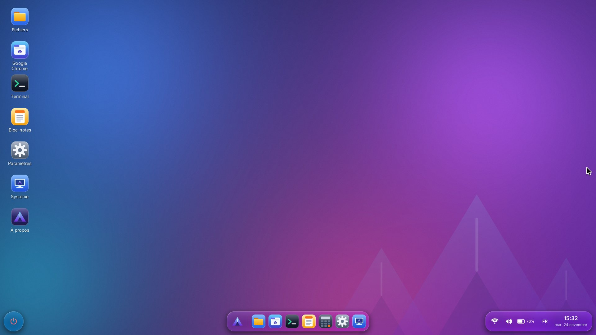
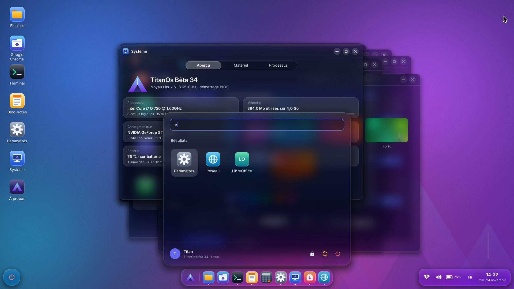
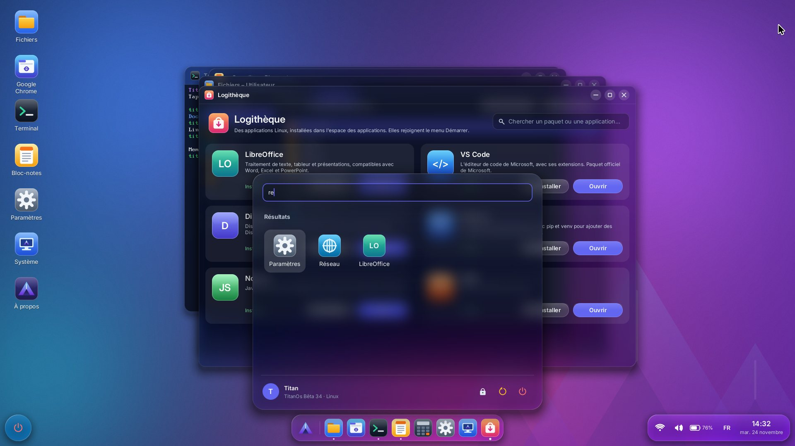
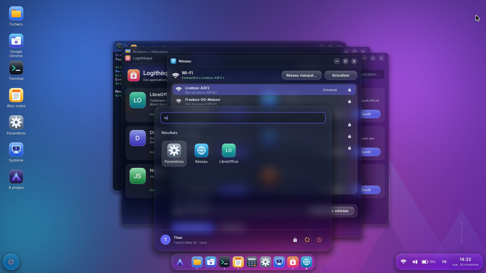
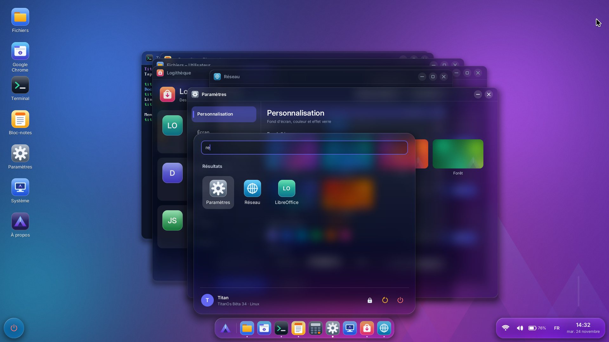
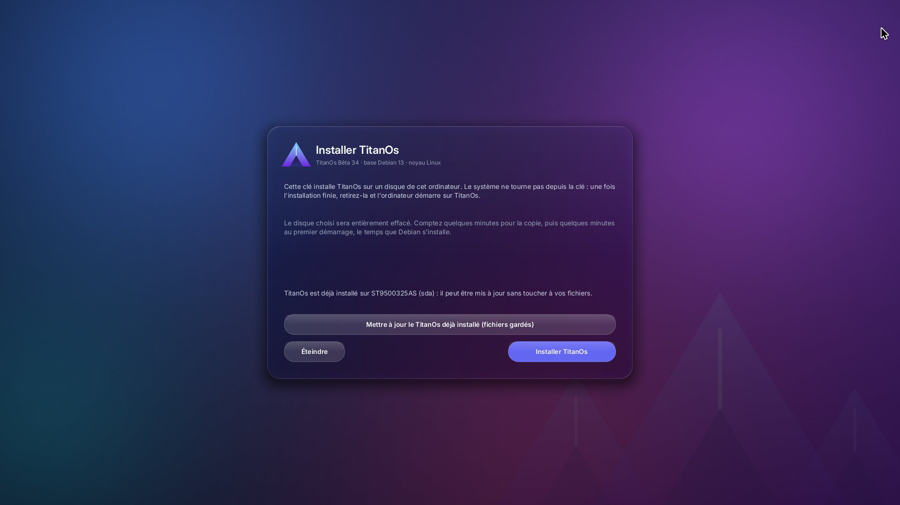
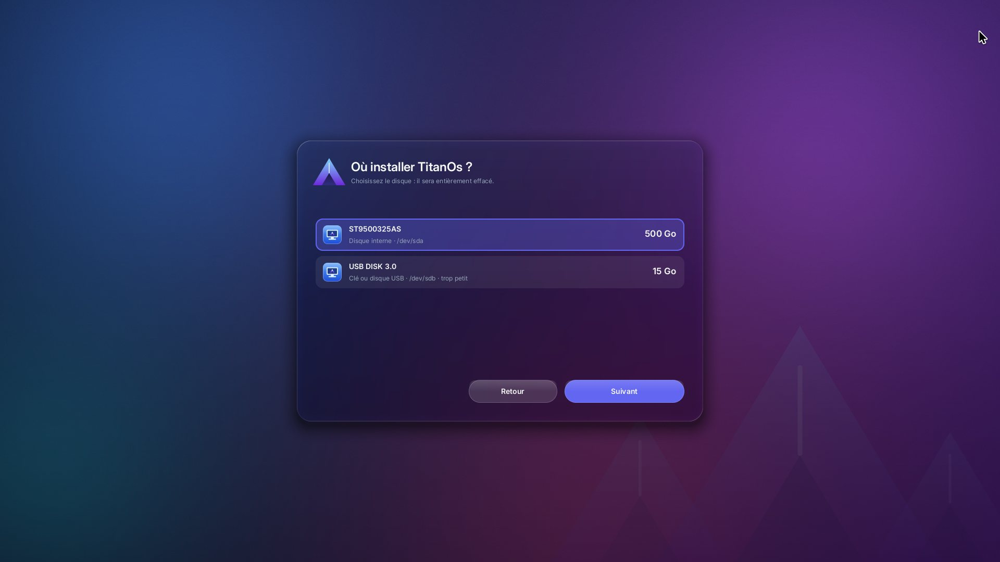
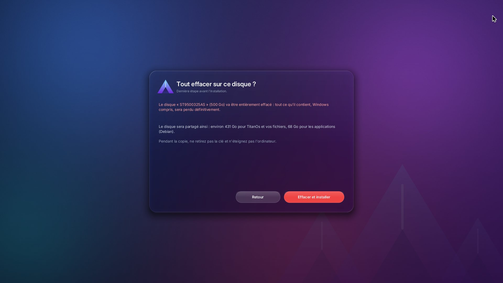
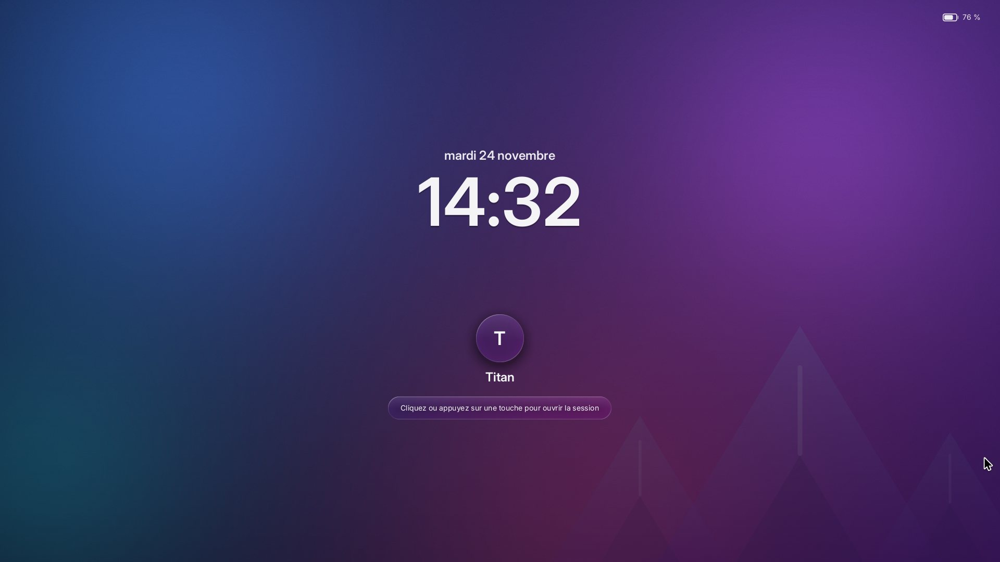

Base
Debian 13.
apt, NetworkManager, PipeWire et systemd, réduits à l'essentiel.
Le système qui démarre en beauté.

Un bureau en verre liquide, écrit en C de la première à la dernière ligne. Un noyau Linux. Une base Debian. Rien d'autre. Soixante images par seconde, même sur un portable de 2010. Installé en quelques minutes, à vous pour longtemps.
C'est TitanOs.
Le principe de TitanOs

Fenêtres, dock, animations, sons, applications : un seul programme en C, sans bibliothèque, qui parle directement au noyau Linux. Il tient en quelques mégaoctets.
Un système qui fait peu de bruit, et beaucoup de choses.
apt, NetworkManager, PipeWire et systemd, réduits à l'essentiel.
Ni X11, ni Wayland, ni bibliothèque : le bureau parle directement au noyau.
Il démarre sur un Sony VAIO F comme sur un PC récent.
Licence GPL-3.0 : le code reste ouvert, pour toujours.
Les nouvelles versions arrivent en HTTPS, vérifiées par SHA-256.
Aucune application ne s'installe sans vous : apt install, et c'est vous qui décidez.
Le Terminal tourne sans droits d'administrateur ; sudo demande votre mot de passe.
Touches Fn, batterie, couvercle, interrupteur Wi-Fi : tout répond.
L'éclairage nocturne réchauffe les couleurs, appliqué par la carte graphique elle-même.
Fonds d'écran
Six ambiances. Un seul verre. Chaque fond est calculé en direct, avec des taches de lumière que le verre fait vivre.
Fond d'écran
Titan
Couleur d'accent
Applications
Fichiers, Terminal, Bloc-notes, Calculatrice, Paramètres, Réseau, Mises à jour… Et pour le reste, toute la logithèque de Debian.
Créer, renommer, copier, coller, glisser vers une clé USB. Chaque fichier s'ouvre avec la bonne application ; les archives s'extraient d'un double-clic.
Un vrai terminal, 256 couleurs, avec bash et toutes les commandes de Debian. apt install demande sudo tout seul ; installer-chrome, installer-discord et installer-vscode installent les paquets officiels.

LibreOffice, VS Code, Discord, GIMP, Python, Node.js : un clic, une barre de progression, et l'application rejoint le menu Démarrer avec son icône. Uniquement quand vous le demandez.

Wi-Fi WPA2, WPA3 et Entreprise, réseaux masqués, câble, partage de connexion d'un téléphone. Une console montre en direct ce qui se passe, erreurs expliquées en français.

Fond d'écran, couleur d'accent, éclairage nocturne, clavier, souris, son, date et heure, mot de passe de session. Tout au même endroit.
Installation
Comme pour Windows : la clé d'installation ouvre un assistant, vous choisissez le disque, TitanOs s'installe. Au premier démarrage, Debian se met en place tout seul.




Code source
Tout est sur GitHub : chaque version, chaque correction, chaque ligne.
Voir sur GitHubTélécharger
La clé d'installation de la dernière version, prête pour Rufus.
Télécharger TitanOsEnvie d'en savoir plus ? Chaque version est décrite en détail, et le README explique comment tout est construit.
FAQ
Oui, et libre : il est publié sous licence GPL-3.0. Tout le monde peut lire le code, l'utiliser et proposer des améliorations ; une version modifiée doit rester libre.
Oui. Le disque choisi est entièrement effacé, Windows et ses fichiers compris : l'assistant le rappelle en rouge avant de commencer. Sauvegardez ce qui compte avant d'installer.
Sur les PC 64 bits, en démarrage BIOS ou UEFI (Secure Boot désactivé). Il est pensé pour le Sony VAIO série F, et les pilotes du noyau Linux couvrent la plupart des machines.
Dans le Terminal : apt install nom pour tout programme de Debian, installer-chrome, installer-discord ou installer-vscode pour les paquets officiels. La Logithèque fait la même chose à la souris. Rien ne s'installe sans vous.
Dans le dossier Utilisateur d'une partition FAT32 nommée TITANOS, lisible aussi depuis Windows ou macOS. Seule limite : un fichier ne peut pas dépasser 4 Go.
Toutes seules : TitanOs cherche une nouvelle version sur GitHub, la télécharge en HTTPS, vérifie ses sommes SHA-256 et l'installe. Il suffit ensuite de redémarrer. Une clé d'installation plus récente peut aussi mettre à jour un TitanOs déjà installé, en gardant vos fichiers.
Pour que les applications « normales » marchent sans effort : Debian apporte apt, des milliers de paquets, et les paquets officiels de Google, Microsoft ou Discord s'installent tels quels. Le bureau, lui, reste entièrement celui de TitanOs.
TitanOs écrit un journal à la racine du disque (journal-titanos.txt). Si le bureau ne démarre pas, un mode de secours affiche la cause et TitanOs redémarre sans Debian. Les problèmes se signalent sur GitHub.